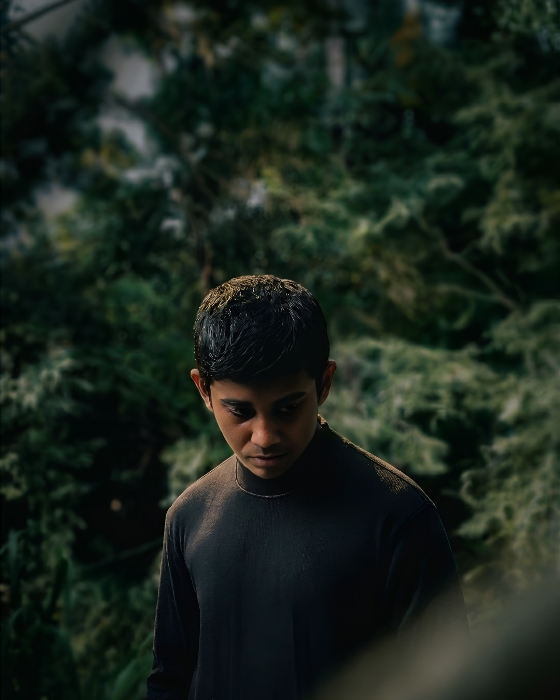

03 / ABOUT ME
HEY,
I'M PEVIN.
Currently a Graphic Designer, creative media enthusiast and a member of the Mahinda College Senior Western Band (MCSWB).
I enjoy building visuals with personality — from posters and campaign graphics to experimental compositions. I'm always looking for the next idea, the next visual language, and a reason to make something a little different.
Work with me ↗WHAT I DO
Visuals with
attitude.
01Graphic DesignPosters · Campaigns · Social visuals
02Creative DirectionConcepts · Visual systems · Art direction
03Media & ContentVisual storytelling · Presentation · Ideas
OUTSIDE THE CANVAS
MCSWB + CREATIVE ENERGY
Being part of the Mahinda College Senior Western Band is another part of the creative world — rhythm, teamwork, performance and discipline all feed back into the way I approach design.